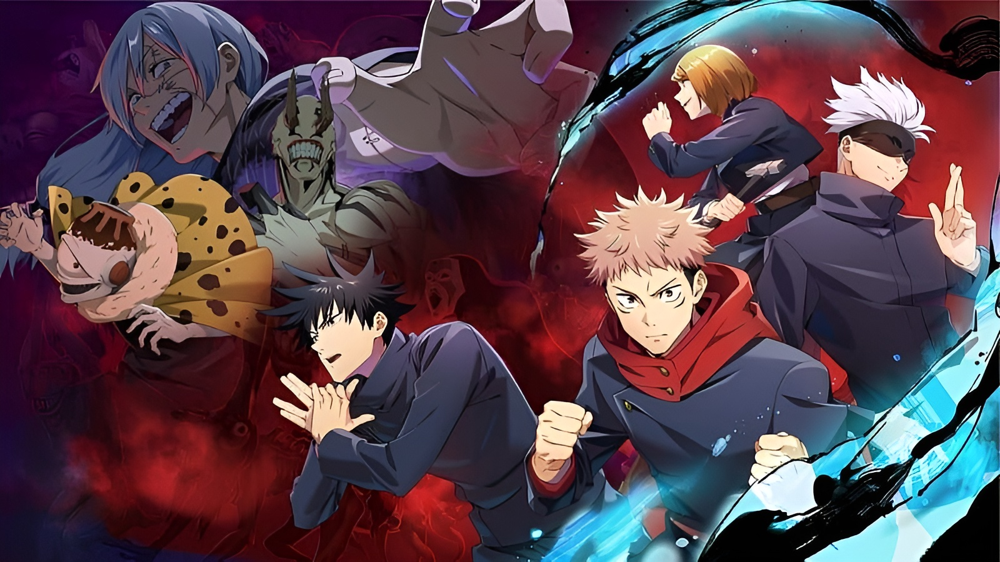
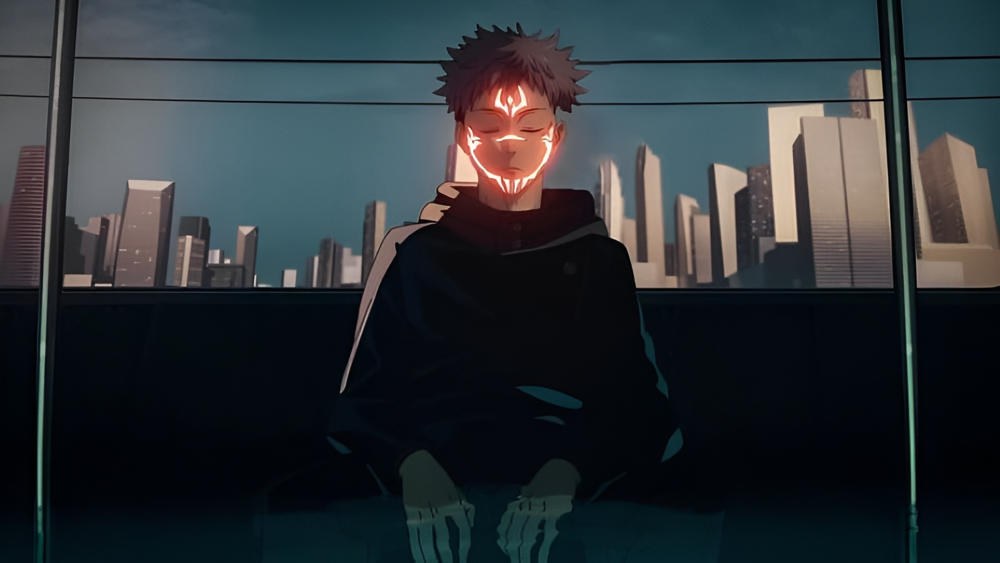
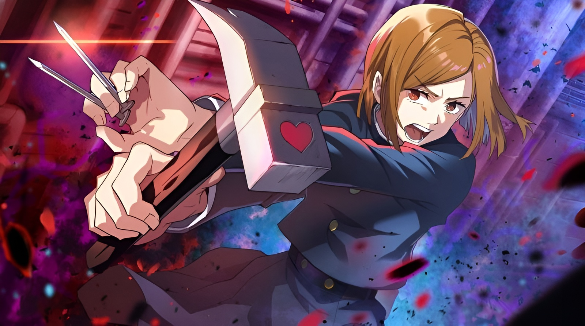
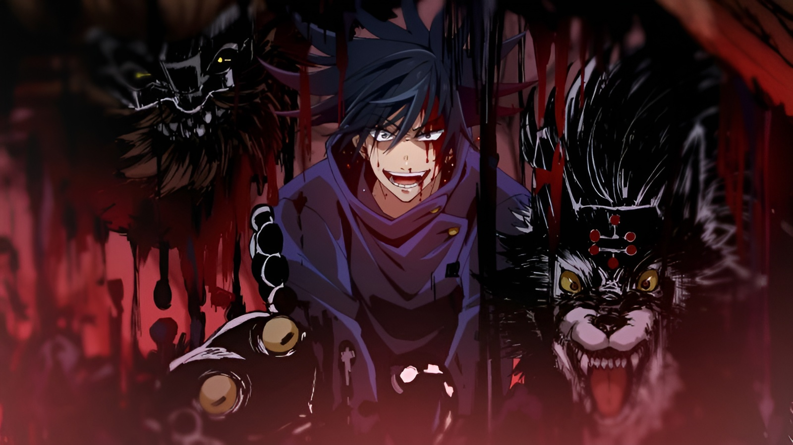
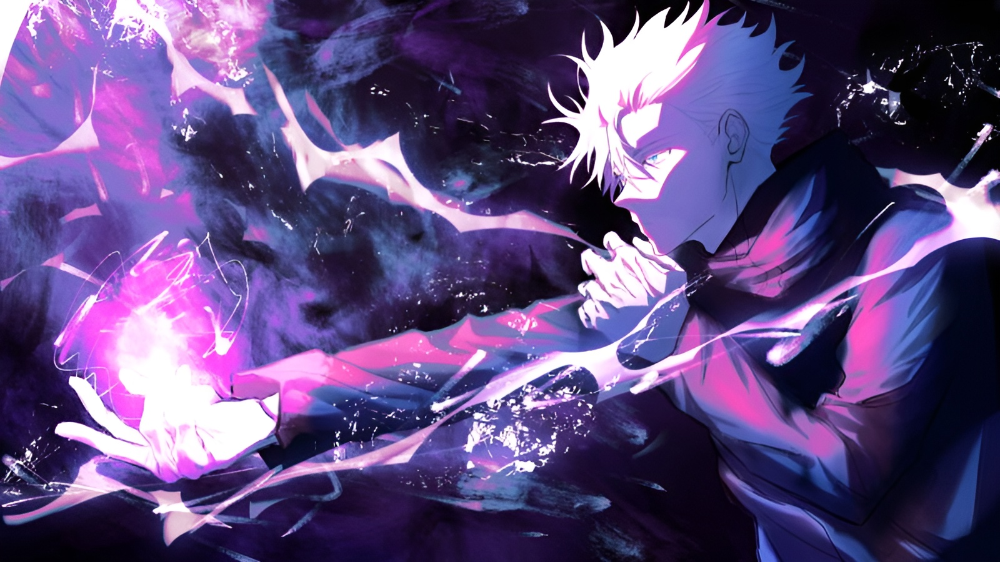
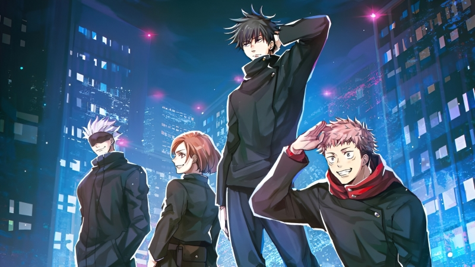

Jujutsu Kaisen fala sobre um estudante do ensino médio, Yuji Itadori, que engole um talismã amaldiçoado, o dedo de um demônio, e fica possuído. Yuji é condenado à morte por exorcismo por feiticeiros de Jujutsu, mas antes que isso aconteça, ele é encarregado de encontrar e consumir os dedos restantes desta maldição.